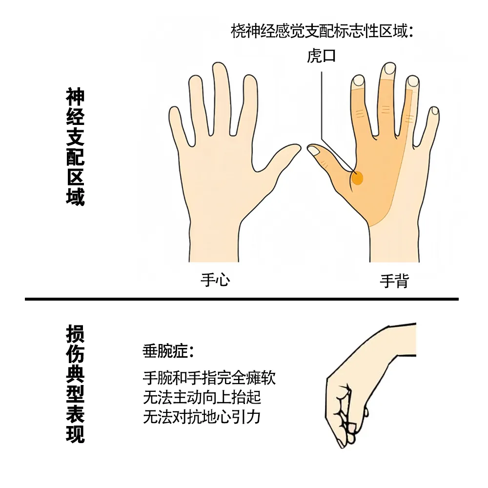
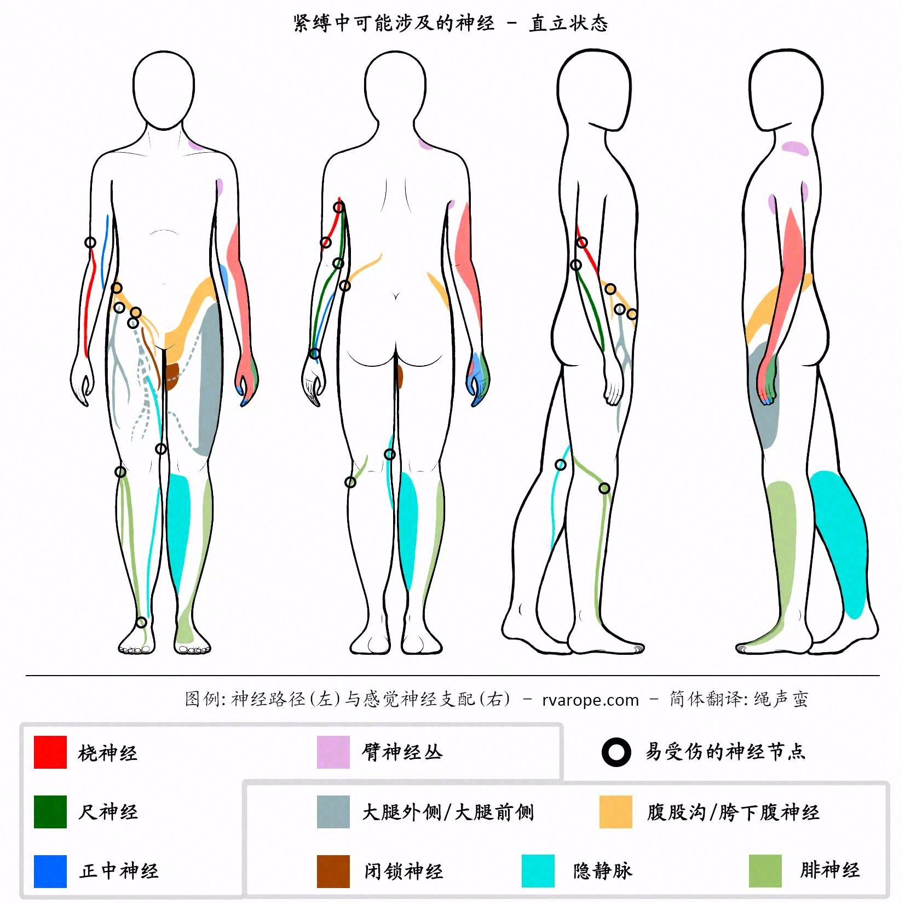

📖 写在前面：关于角色视角的阅读建议 ▼
为了让这份指南更具实用性，我在各个要点中加入了三种角色标签。带着自己的视角去阅读，能够更直观地理解彼此在实践中的责任与感受：
⚠️ 注意：此处的划分并非意味着您只需要了解属于自己角色的部分。安全原则上，指南中的所有内容均为实践双方都必须完全熟知并共同理解的底层知识。对彼此面临的风险和职责保持同等的理智，才是最安全的屏障。
1. 缚前准备与安全共识
1.1 核心理念与双向责任 ▼
本指南主要为被缚者提供安全建议，但对缚手也同样适用。制作本指南，是希望帮助大家在绳缚实践中，能做出更理智、更安全的选择。
📢 共同 切记，绳缚虽然有趣且能带来愉悦，但也伴随着极大的风险。只有不断精进技术并建立双方的自我觉察，才能最大限度地降低风险。双方都必须完全清楚并专注于自己的能力边界。请务必记住：风险只能降低，无法彻底消除。
📢 共同 每个人身体结构、关节柔韧度与痛觉敏感度都独一无二。对别人安全的事情，对你来说可能非常危险。并非所有的绳缚都适合每一种体质，我们学会倾听并尊重自己身体的局限性，是安全的前提。
🧶 缚手 随着经验和自我觉察的积累，你会更轻松地找到并顺应自己身体的真实偏好、欲望和特定需求。缚手有责任确保自己的操作安全且正确，但要记住，并不存在一个能够生搬硬套的“完美标准”来定义什么才是对被缚者最好的体验。
🧑🤝🧑 被缚者 想要获得舒适的绳缚体验，作为被缚者必须承担起主动沟通的责任。绳缚是双方共同完成的身心旅程，有效沟通是降低风险的关键。无论是在平日玩耍、上课还是平时练习，被缚者都应该在缚前、缚中、缚后大方且坦诚地向对方表达真实的感受。
初接触绳缚时，你可能不太清楚自己在绳缚里的身体反应和感受，这很正常。这是一个需要时间来倾听身体、认识自我的过程。但请守住底线：一旦觉得不对劲，请立刻告诉缚手，安全永远优先于一切。
🧶 缚手 缚手同样会面临精力不济或状态欠佳的时刻。与其勉力维持、最终导致双方受挫或发生危险，不如坦然叫停，稍作休整。只有在平等、包容且不带指责的沟通氛围中，双方才能建立起真正可信的反馈机制。
📢 共同 一些经验丰富的玩家可能会尝试打破常规。这并非不可，但前提必须是被缚者完全知情并明确同意承担该风险。这种探索是可以的，但必须极为谨慎，时刻评估可能带来的后果。在尝试打破规则前，缚手必须已经对安全规则烂熟于心，因为只有彻底掌握规则，你才有资格破例。
📢 共同 作为被缚者，永远不要顾虑向与你一起玩、授课或练习的人提问。请牢记：安全永远高于任何 D/S 规矩。同样地，在商业拍摄或艺术表演中，你的生命安全永远高于作为被缚者或者模特的所谓“职业精神”或工作职责。
这份指南无法涵盖所有情况，如果您对其中的某些观点持不同看法，我们非常尊重并欢迎求同存异。
1.2 责任评估与核对 ▼
📢 共同 在绳缚实践中，每个人都要对自己负责。作为被缚者，决定将身体交托给谁，是一项关乎自身安全的重大考量。被缚者必须了解自己即将面临的风险。很多时候，最大的危险恰恰来源于对潜在危机的盲目与无知。
🧑🤝🧑 被缚者 如果过程让你感到任何不妥或不适（无论是生理的疼痛还是心理的不安），都应该毫不犹豫地喊停或说明。建议被缚者也能主动去了解基础的解剖常识，多了解自己身体的构造，尤其是自己身体有哪些旧伤或需要特别注意的脆弱部位，这非常关键。
🧑🤝🧑 被缚者 主动告知缚手你的身体和健康状况（比如旧疾、心理状态或任何可能影响绳缚的细节）。坦诚分享这些信息是被缚者的责任，这不仅是保护自己，也是对合作伙伴的尊重。
🧶 缚手 被缚者同样有权了解缚手当前的身心状态，看看是否有任何会影响此次体验的因素。相反，对缚手而言，了解基本的人体生理学是硬性要求：你必须熟悉神经走行等解剖学常识、知晓易伤部位和潜在风险，并懂得如何在紧急情况下施救。缚手必须对自己的技术水平保持清晰、理智的认知，退后一步，只在自己的技术安全区内进行操作。
一位优秀的缚手不仅需要扎实的技术，更需要保持谦逊、开放的态度。不过，绳缚有时对双方来说都是新领域，因此每次尝试，大家都必须仔细评估具体的风险、彼此的能力限制以及当时的技术和情绪状态。
宁可少绑、绑简单点，也要确保安全和质量！
🧑🤝🧑 被缚者 辨别一个缚手的好坏并不容易。他绑过的人多，不代表技术就一定好。他可能是个优秀的活动组织者、在圈内名气很大，但这不能证明他的捆绑技术过硬。被缚者决定让谁绑，唯一的标准就是你自己的直觉和判断。你无法预先知道跟某人合不合拍，必须在对自己负责的前提下去尝试。建议不要操之过急，开始前多交流，并充分参考本指南中的建议。
评估眼前人的实用建议（交互核对表）
完成度: 0%1.3 缚前沟通与契约 ▼
📢 共同 沟通是所有绳缚体验中无法动摇的核心与灵魂。这场开诚布公的对话必须在任何绑缚活动开始前彻底完成，不管是私密游戏、本地俱乐部社交、上公开课还是上台表演。事先对齐安全边界与行为底线，不仅不会破坏氛围，反而能扫除内心的顾虑，让双方更投入、更安心。 在探讨规则时，双方在人格上是绝对平等的，不受任何角色设定的影响。
🧑🤝🧑 被缚者 提前和对方确认：你希望得到什么样形式的善后抚慰。要记住，不光被缚者消耗巨大，缚手在结束后同样可能面临体能与情绪的疲惫，也需要平复。如果你完全不需要善后抚慰、喜欢在解绳后独自一人待着，也应当提前说明。
双方都有绝对的权利在开场前分享自己对这次体验的期望、向往，并共同探讨何种细节能带来愉悦与安全感。
🧑🤝🧑 被缚者 自我保护底线：如果对方试图在开场前向你施压、诱导或强迫你接受任何让你感到别扭、不适的边界，立刻拉黑，绝对不要妥协。最可靠的安全屏障永远是你自己的理智和直觉。 只要你直觉上有一丝犹疑或觉得不对劲，绝对不要跟着对方去私密或不安全的封闭场所。
初次沟通中一些非常实用的要点包括：
- 场所安全性： 我们在哪里绑？（私人公寓、公开工作坊、还是同好俱乐部？）
- 现场人员构成： 现场有没有其他人？（是否涉及他人围观或摄影记录？）
- 边界底线： 实践中是否包含性接触？你们彼此对“性活动”和“越界”的定义分别是什么？（千万别觉得大家都懂、想当然，白纸黑字地说明白至关重要。）
- 触碰限制： 哪些部位可以触碰，哪些部位绝对不能碰？是否可以插入？避免任何打擦边球、含糊其辞的提问或回答。有疑问立刻追问，直截了当最能保证安全。
- 附带活动： 除了用绳子捆绑，是否包含滴蜡、拘禁、鞭打或其他感官刺激元素？
- 痕迹与生理耐受度： 是否可以留下痕迹、红印或鞭痕？如果可以，你能接受的肉体极限在哪里？
- 安全信号： 明确统一的叫停信号，使用哪一个安全词？例如：“红色”（代表立刻彻底解开）、“黄色”（代表感到不适，需调整张力或改变姿势）。
这绝不是全部的备忘清单。针对任何你认为可能会影响身体安全、情绪底线的敏感话题，都必须坦诚并相互确认。如果在捆绑进行到一半时才突然意识到某个未曾谈及的边界，不要有顾虑，在缚中实时叫停沟通。你始终拥有绝对的最高安全否决权。
1.4 辅助生理机能准备（拉伸与饮食） ▼
📢 共同 静态拉伸： 拉伸旨在舒展紧张的肌肉，增加各处骨骼关节的最大活动范围。这不仅能在绑缚前充分预热肌肉和软骨，还能有效加速关节腔滑液的分泌，保护我们的关节在受力拉伸时不受伤。拉伸是一项长期的日常保健手段，即便在不玩绳子的时候，在睡前、醒后或久坐后多进行拉伸也大有裨益。
玩绳前推荐进行温和、静态的拉伸。配合悠长的呼吸、保持某个舒展姿势几秒钟，最能让肌肉和心灵感到松弛。拉伸不需要追求极限的瑜伽杂技柔韧度，规律、恒定的练习更重要。
📢 共同 能量储备与低血糖防范： 玩绳前千万不要空腹，但也不要暴饮暴食。玩绳是高强度肉体负荷运动，消耗量不亚于去健身房，所以保持合理的充能（提前两小时吃饭）非常重要。随身备好高糖零食（如可乐、黑巧克力，甘草糖），若在实践中感到气短、心慌、头晕时，立刻口服补充，效果极其明显。
🧑🤝🧑 被缚者 腹部受到高张力绳索的压迫时，部分被缚者会产生胃部压迫感甚至恶心，这属于正常的内脏神经反射。遇到这种情况请保持冷静，让缚手把垃圾桶拿到你手边以备不时之需。如果吐了后你感觉舒服多了且依然想玩，在没有其他器质性病变的前提下，继续进行也是安全的。
2. 身心觉察与神经化学
2.1 自我觉察与疼痛辨别 ▼
🧑🤝🧑 被缚者 自我觉察不是与生俱来的，而是通过长期、坦诚的自我审视与剖析逐步培养出来的。每次绳缚后，多花些时间去消化、整理和反思。你会慢慢发现，自己的身体和情绪在应对高压、痛苦和强烈情感时，有着某些高度重复的“生理和心理反应模式”。
一个非常管用的习惯是“记绳缚日记”。记录下每次的生理反应和情绪起伏。这能帮你勾勒出清晰的个人档案，更好地看清自己和对绳缚这门艺术的理解。了解自我的另一个极佳途径是多与同好们交流和对比。主动向他人请教、询问他们的真实体验和生理感受。听听别人的经历，倾听他人的真实感受，你能收获极其宝贵的安全警示和经验。
多和同伴交流，也多向圈内的元老和专业人士请教，这样能帮你拥有更广阔的安全视野，不会在面对突发情况时手足无措。经常在脑海里预演和拷问自己：“当面对极度强烈的肉体刺激时，我的大脑通常会是什么反应？”或者，“我身体上哪个部位其实最怕痛、最脆弱？”提前做足心理建设，能让你在面对高负荷绳缚时保持理智，不被本能吓倒。
接纳并诚实地倾听每一次强烈的生理信号——哪怕是那些让你觉得不太舒服的预警信号。这是提高自我觉察、精准掌握自己身体警报的最佳方式。
🧑🤝🧑 被缚者 区别“好的疼痛”和 “坏的疼痛”是被缚者最核心、最根本的安全红线：
- 好的疼痛：如韧带被安全拉开的感觉，或是大面积肌肉受压承重时的沉重钝痛，通常在承受范围内且不会引发心慌。
- 坏的疼痛：如神经压迫发麻、关节由于暴力的反关节扭转而发出干涩卡顿、骨盆旧疾处的割裂痛等。
而这需要你通过不断的练习、在对自己负责的前提下，多和圈内老手们取经总结。
2.2 神经化学与“绳醉”状态 ▼
📢 共同 在绳缚文化中经常被提及的 Ropespace，指的是因绳缚而产生的一种意识恍惚状态（或：绳醉状态）。
从神经生理学角度来看，这种“意识恍惚状态”指的是：在身体无病变的情况下，这是大脑在特定刺激下改变了工作模式。这种改变会影响到你的短期记忆、思维逻辑、甚至时间和空间的感知——你会觉得周围变慢、痛觉钝化，产生一种难以言喻、甚至有些恍惚的安全虚无感。整个人处于一种轻飘、空灵却又极度安全的状态中。
在绳缚实践中，身体会分泌大量的化学信使：内啡肽、多巴胺、血清素、GABA、肾上腺素。这些分子会以不同的顺序和时间爆发在缚手和被缚者的体内，共同支配着你们的情绪起伏、安全感和感官灵敏度。
弄清楚这些体内化学变化，能帮你更从容、更理智地看待绳子带给你的奇异感受。知识虽然不能阻止你产生某些恐惧或情绪不适，但它能提供一盏指路明灯，帮你理清它们到底来自哪里，不至于手足无措。
🧠 交互工具：探索大脑中的化学信使
特别警告：由于内啡肽和多巴胺等这种“天然镇痛剂”的大量分泌，被缚者对真实疼痛的感知会大幅迟钝。你必须时刻牢记，你当下觉得“尚能忍受”的疼痛程度，可能已经超过了身体组织的真实承受极限。只有保持绝对冷静、实时的双向反馈，才是保护身体不受伤的唯一底线。
如果在实践前，已经因为酒精、药物或近期的情绪崩溃而处于精神恍惚的状态，建议立刻取消今天的计划。
请避免陷入一个危险的误区：将绳缚视为治疗心理创伤的特效药，或纯粹追求逃避现实的迷幻感。这种动机极易导致情绪失控，并给双方带来难以弥合的心理负担。
3. 物理安全与绑法实践
3.1 解剖学、神经与循环 ▼
掌握一些基础的人体解剖学知识，摸清身体哪些部位最容易受伤，能让你的绳缚体验既安全又享受。
一旦神经受损，你可能会暂时失去受损部位的知觉，或者无法动弹。显然，保护神经是重中之重。但遗憾的是，我们很难做到百分之百避免。在绳缚（尤其是悬吊）中，神经损伤是最常见的伤害之一。
3.1.1 反馈🧑🤝🧑 被缚者被缚者必须及时给缚手反馈，并清楚了解自己身体各部位在受到绳索压迫时的反应。有时候，直到被吊起来、或者被摆成极其别扭和辛苦的姿势（哪怕是在地面上）、再或者是绳子承受拉力之前，你身体可能不会有任何不对劲。
以手臂为例，当上臂的桡神经受到压迫时，最直接的报警信号通常是手部感到不适。如果被缚者觉得手臂上的绳子刚好勒在神经或敏感部位上，请立刻让对方稍微调整一下：有时候仅仅挪动几毫米，感觉就会大不相同。只有通过不断的沟通反馈，才能找到最适合你身体特征的捆绑位置。
🧶 缚手 缚手也必须保持耐心，去寻找最适合每一个被缚者的手臂摆放位置。这通常需要花时间进行反复尝试，但不用慌张。有时候，稍微调整几毫米就能保住神经不受伤。如果拿不准，随时向圈内有经验的玩家（不管是缚手还是被缚者）请教，请他们帮你看看绳子该怎么走，是作为一名缚手负责任的表现。
有些绑缚方式（特别是操作不精细、或者缚手自己站位尴尬不好发力时）容易引发皮肤的拉扯灼伤（俗称“绳烧”）。这虽然不算严重伤势，但也应尽量避免。通常一些微小的位置调整和及时的痛感反馈就能解决。
- 🧶 缚手对缚手来说：绳烧最容易在绳子贴着皮肤滑动时发生（比如起吊、落地的过程中悬吊绳在身上摩擦）。绑缚时，注意避开绳子的受力摩擦区。另外，在身上快速拉绳子也极易勒伤皮肤。
- 🧑🤝🧑 被缚者对被缚者来说：如果感觉皮肤有拉扯和剧烈灼热感，一定要立刻提醒对方。只要及时提醒，缚手便可以放慢拉绳速度，或通过提拉绳索，或垫入手指，为你提供缓冲保护。
一旦手部或身体任何部位出现麻木、发冷或“被针扎”的麻刺感，都是身体在发出危险警报。
导致麻刺感最常见的两大原因：血液循环受阻或神经受到压迫。能帮我们区分这两种情况的体征其实很少，而且它们不一定每次都会显现，因此你必须学会感知并辨别自己身体的异样。
大多数时候，神经损伤会表现在手部（比如手掌发麻或有针刺感）。神经压迫和循环不畅有一个最显著的区别：神经压迫受损带来的麻木感，通常只局限在手部的某一个特定区域（比如仅无名指和小指麻木，或者仅大拇指和食指无力），而不是整只手冰凉麻木。
🩺 交互诊断：自检和排查方法
血液循环受阻通常是因为绳索过紧阻碍了静脉回流。虽然它不像神经压迫那样会在短时间内造成持久损伤，但也绝不能掉以轻心。随着经验的积累，你会对自身的耐受极限有更清晰的把握。
循环受阻最直观的表现是皮肤发青或发紫。然而，这种颜色变化非常具有主观性，与个人的体质密切相关，并不能完全反映问题的严重性。一些被缚者的皮肤变蓝得非常快，但并没有其他不适，这些被缚者能够轻松地继续绳缚；而另一些人可能即使皮肤没有呈现深蓝色，也需要立即解绳。沟通一如既往地至关重要。如果你的循环系统有什么已知的情况，最好在开始绳缚之前告知对方。
需要注意的是，对于某些人来说，避孕药可能会增加血栓风险或加重血液循环问题。
除了皮肤颜色外，循环问题的另一个常见症状是整个手、手臂、腿或被绑缚的其他身体部位可能会变得麻木或发麻。
即使存在循环问题，并不意味着神经一定在承受损伤，但循环受阻会掩盖神经受损的警报。例如，如果你的整只手已经因为血液不通而麻木发木了，你根本无法感知桡神经或尺神经是否也正在遭受压迫。一旦你对身体的异样感到怀疑，或者身上出现了无法忍受的麻刺感，最安全的做法就是立刻解绳。
神经受损发生得非常快。这正是它最可怕的地方——当你开始觉得不舒服时，神经损伤往往已经在发生或已经造成了。
神经损伤具有累积效应。 如果你的某处神经受过伤，在它完全彻底康复之前，绝对不要再次捆绑受累部位，否则极易留下无法恢复的永久性损伤。
3.1.3 绳缚中常见的神经损伤、自查及应急处理
📢 共同 不同于局部微观的神经损伤自查，在实际捆绑过程中，绳索的走向会直接穿过身体的各大神经通道。以下图示直观地展现了在不同绳缚位姿（直立、合臂、日式高手小手缚等）下，绳索走行与全身主要神经走行的宏观交集、以及易受伤的神经节点。

当把双手绑在背后时，要肩颈区域构建稳固的承重结构，是一项需要精细力学控制的工作，极其考验缚手对骨骼特征的熟悉度。
特别警告：尽量避开肘关节附近。肘部是一个极度脆弱的盲区，这些部位的神经位置极为浅表，缺乏肌肉软组织的缓冲，直接暴露在紧贴皮肤表面的位置，绳子稍有压迫就极易造成损伤。
想要摸清每一个被缚者桡神经暴露的具体易伤点并不容易。绳子在走行和定位时，必须根据每个人不同的骨骼和肌肉曲线，小心地绕开那些容易产生压迫的位置。
常用的神经排查速记口诀：“桡管虎口，腕管中指尖，肘管小指环”（若虎口麻木侧重排查桡神经，中指麻木排查正中神经，小指麻木则侧重尺神经）。
3.2 缚中沟通与即时调整 ▼
📢 共同 在绳缚过程中保持实时的相互感知和沟通非常重要。除了报告身体异常，被缚者也可以大方分享绳子、姿势、高度变化时带给你的奇妙快感、张力与情感宣泄。你可以通过言语表达、舒服的呻吟，或者呼吸节奏的变化来传达这些反馈。
如果感到绳结压到了骨头，或者衣物、头发被意外卷入，请立刻提出。很多时候，缚手仅需为你微调几毫米的绳圈位置，就能带来如释重负的舒适感。
🧑🤝🧑 被缚者 只要感觉指尖、脚趾有微弱的发麻，即使你认为“尚可忍受”，也必须立刻告知缚手，这能为紧急排查争取宝贵的时间。瞒着不报是造成神经永久受损的头号元凶。只要敢于说出来，伤害发生的概率会小得多。
3.3 后手缚安全指南 ▼
📢 共同 后手缚（如 Gote / TK / Box Tie 等）涵盖了多种将双臂反剪于身后的经典变体。指的都是将双手反绑在身后的捆绑方式。它们在美学风格、力学承重及安全系数上各具特点。实践中并不存在“哪种后手缚绝对舒适”的定论，关键在于针对不同体型与肩宽进行细节微调，比如双手可以绑得高一些、低一些，或者使用的绳圈多一些、少一些。
于此类缚式必须在手臂上构建固定的绳圈，其行经路径几乎不可避免地正好会压在主要的神经通路上。如果缚手的力学把控欠佳，或者被缚者刚接触绳子、不清楚如何辨别身体异样，这种绑法便暗藏极高的风险。
双方在初次尝试后手缚时，必须保持频繁、即时的沟通反馈。作为被缚者，如果你感到不舒服或疼痛，主动询问缚手：“这种痛感/这种紧绷度/这种姿势限制是正常的吗？”是开始安全探索这种绑法的重要一步。
相比之下，双手可以自由活动的单纯胸缚则隐藏着另一种风险：它的绳索更容易压迫腋下深处的神经丛（臂丛神经）。臂丛神经是一个交通枢纽，包含了桡神经、正中神经、尺神经和腋神经。该神经丛支配着整条手臂的感觉，一旦卡压将导致广泛的麻木。
通用核心原则：手腕上绝对不能出现会越勒越紧的活结（缩紧结）。这会极大增加血管和神经受损的几率。如果手腕绳圈打得过紧，不仅极度痛苦，更极易导致严重的神经损伤。
别以为只有手臂才是危险区，手腕的危险系数甚至更高，因为手腕处的神经几乎直接贴着骨头和皮肤，没有任何厚实的肌肉能提供缓冲。
还有其他手臂绑缚的方式。其中最流行的一种经常被错误地叫做后手直臂缚（Strappado），但实际上它只是一个 Arm Binder（束臂缚）。
“Strappado”一词主要指手臂被锁死的摆放姿势，而不是某种具体的捆绑手法。双臂于身后被强行平行靠拢，肘部受到极端的内收挤压。这种极限姿势对被缚者的关节柔韧度要求极高，极易导致肘关节周围神经受卡压，阻断前臂循环。
3.3.1 双臂交叠的位姿与受力🧶 缚手 缚手有责任（特别是面对新手被缚者时）让对方试一试，看他更习惯将哪只手臂压在下面（即哪只手臂先背到身后）。对上下手臂的偏好因人而异：取决于旧伤、日常姿势习惯、关节僵硬程度、利手（左撇子或右撇子）以及柔韧性等。
必须注意：一旦离地悬吊，位置靠上的那只手臂（通常也就是先背到身后、压在下方的侧臂）会最靠近承重主结，它承受的拉力和压迫最大，因此也最容易受伤。
有些后手缚要求前臂平行，这会导致其中一只手臂靠近绳结，而另一只手臂则经常受到手腕绳圈的压迫。进行这种绑缚时，如果手部感到发麻，有时缚手只需把指尖塞进下方手腕绳圈内，稍微往上抬一下、松一松绳子，麻木感就能缓解。
在练习中，建议尝试调换一下左右手臂的上下交叠位置，以找出更舒服、更习惯的摆放方式。被缚者在决定更换交叉方式时，一定要小心并充分评估关节的拉伸感，不要暴力扭转关节。
🧑🤝🧑 被缚者 有的被缚者在背后喜欢用大拇指紧紧扣住另一侧手臂以寻求稳定感。这是一个必须纠正的危险动作。 当被吊起来后，手臂一旦被绳子完全压紧锁死，你可能根本无法把被压住的大拇指抽出来，极易导致大拇指关节和神经受损。
高手小手缚（TakateKote）需要手臂和肩膀具有一定的柔韧性。这种姿势下，绳子绕过手腕，将双手强行拉向后颈或上背部。如果关节不够软，这个姿势会极其辛苦和痛苦。缚手如果掌握了如何引导手臂充分内旋并让肩膀前倾，能大幅减轻被缚者肩袖和关节承受的不适感。
由于双手被吊高锁死，且背部被迫极度挺直或拱起，这个姿势会带给被缚者极度强烈的生理和心理上的“脆弱无助感”。这也是许多实践者认为其最能引领人进入“绳醉”深度的原因。请注意，在这个姿势下，一旦发生循环问题，是不可能中途调换手臂的，必须立刻着陆。但即便如此，有些玩家依然觉得高手小手缚比其他姿势更有感觉、甚至更舒服。
3.4 双腿缚安全指南 ▼
📢 共同 有一些硬核的腿部绑缚，既需要缚手技术过硬，也需要被缚者具备较强的疼痛忍受力和调节能力。比如捆绑 Futomomo（折腿缚：小腿和大腿折叠捆绑一起），就牵涉到诸多安全细节。
通常，被缚者会觉得折腿缚非常折磨、相当疼痛。缚手的手法和细节调整决定了你能不能坚持下去。这种绑法需要绳索保持很大的张力来承重，所以即使打结时没有刻意勒紧，你的肉体也会觉得“极其紧绷”。
另一个原因是，当双腿折叠时，小腿腿肌和骨骼会产生向外扩张的爆发力，死死顶住绳子。折腿缚有很多种绑法。绳圈缠绕的圈数越多，体验就越舒适，因为压力被大面积平摊了。相反，如果绳圈稀少、且在腿上重叠交叉，就会形成极高压线，带来剧痛甚至损伤。尤其是压迫在胫骨（小腿迎面骨）上的绳索会让人痛入骨髓，因为胫骨几乎没有任何脂肪或肌肉保护。
🧶 缚手 只要缚手保持耐心，在承重起吊前根据被缚者的反馈，将腿部的每一道绳圈仔细理顺、匀开张力，折腿缚其实能提供极其稳固且踏实的承重感。具体的绳圈高低偏好因人而异，有的人倾向于靠近腹股沟，有的则更偏向膝关节，这需要双方进行充分沟通。
折腿缚会完全锁死髋关节与膝关节的活动度。所以捆绑时，必须预判好最终悬吊时身体需要呈现的姿势。和手臂一样，双腿和骨盆关节在折叠、拉伸时，有其特定的生理活动轨迹（动力链），每个人的关节曲线各不相同，必须格外小心。髋关节虽然比肩关节更稳固，但若违背其自然运动轨迹强行扭转，极易引发剧烈的肌肉痉挛（抽筋）甚至骨关节卡压。
折腿悬吊的受力点主要有两个：内侧起吊点或外侧起吊点（均打在最上方的那圈绳带上）。从内侧起吊时，重量主要落在更耐痛的大腿上；从外侧起吊时，重力会压在脆弱的胫骨（小腿迎面骨）上。 这只是一个基础物理原则，具体的重力分布还要根据身体上绑的其他结构联合决定。
绳子勒住小腿骨的痛感有时非常尖锐。一旦被缚者感到无法忍受的痛楚，缚手可以用手指依次轻轻按压腿上的每一圈绳子，测试并找出罪魁祸首是哪一圈。找到压痛点后，缚手应当立刻抱起被缚者卸掉重力（如果是悬吊状态，立刻把人放低着陆），对勒紧的部位进行松绑或微调。有时候，只需要把绳子从主骨架绳（stem）处往回抽送几毫米、分摊掉过紧的局部张力，痛苦就会瞬间消失。在绳缚的力学调控中，往往这几毫米的微调便能使痛苦瞬间消散。
另一种涉及腿部的经典绑法是 Ashi Shibari（并腿缚：双腿并拢捆绑）。并腿缚承重面广、安全性较高。如果被缚者的小腿骨非常凸出、容易硌得生疼，缚手应当动动脑筋，将粗大的承重绳结和交叉部位挪到远离骨头和敏感区域的安全地方。
并腿缚最容易压迫到的部位是膝关节外下方的腓总神经（Peroneal Nerve），所以小腿肚上方的受力绳圈绝不能放错位置。同样，每个人对这个绳圈的高低喜好也不同。双方先尝试着移动绳圈、寻找最安全的承重位置，是非常值得推荐的。
请时刻记住：一旦被吊离地面，在沉重受拉的状态下，想要对任何不适的绳索位置进行调整都会变得异常困难。
3.5 手腕与单肢缚安全指南 ▼
📢 共同 单柱缚（Single Column Tie） 和 双柱缚（Double Column Tie） 最常用来捆绑单一肢体，或者把手脚绑在一起。它们非常方便，但安全细节同样不可忽视。
绝不能在腕/踝关节处使用活结。活结在承受拉力时会越缩越紧，死死勒住血管和神经，极易造成局部缺血或瘫痪。
🧶 缚手 避免把绳索压在手/脚掌根部到手/脚腕/踝突出关节骨（腕骨/踝骨）之间的凹陷盲区，因为这里的血管和主神经浅表，没有任何皮下组织缓冲。
正确的做法： 绳圈必须安放在手脚腕/踝关节骨突出处的上方、靠近手臂/小腿方向的区域（即远离手脚腕/踝的安全位置）。
3.6 拍摄与表演环境 ▼
📢 共同 在进行商业摄影或影片拍摄时，双方都必须确保现场有专业的第三方助理协助。被缚者和缚手必须严格考察摄影师和合作团队，确保他们尊重亚文化与基本底线。
拍摄前，必须和现场所有相关人员（包括摄影师、化妆师、助理等）开诚布公地明确画面美学标准。包括：拍摄尺度到哪里（是否涉及大尺度/敏感画面）、主打什么情绪基调，以及任何可能引起误会的安全死角，彻底消除沟通盲区。
🧑🤝🧑 被缚者 拍摄过程中，频繁、及时的沟通同样必不可少。双方都应清醒地认识到：拍摄不是普通的玩耍或排练，也不是自娱自乐。拍摄过程往往由于灯光、机位微调，导致被缚者被困在同一个姿势下的时间长达数倍。这极大地考验着个人的体能与生理极限。此时必须保持极高的警惕，一旦出现肢端麻木，切勿为了所谓的“敬业精神”强行忍耐。
在舞台或公共场合公开表演时，由于面对观众，被缚者可能会感到羞耻、紧张或大脑一片空白，从而丧失了开口说话的能力。此时，必须提前建立非言语沟通渠道。如果双方约定在表演时不说话，可以使用非常明确的肢体暗号（比如：大幅度摇头来引起缚手注意，或者缚手轻抚、捏捏对方的手掌来检查其神经灵活性）。
根据现场的特殊环境选择最合理的沟通套路。要想在舞台上仅凭无声暗示就达成完美默契，在台下彻底熟悉彼此、反复对齐暗号和对应含义是唯一可行且最安全的手段。
4. 着陆、危机应对与疗愈
4.1 晕厥极端危机应对 ▼
🧑🤝🧑 被缚者 被缚者发生晕厥是绳缚中非常紧急的突发状况。它可能在起吊、甚至解绳血流回冲的瞬间发生。以下情况极易诱发晕厥：
- 长时间的直立绑缚（如立柱缚，导致下肢血液淤积）
- 绳圈对心窝（胸骨下缘，胃部膈肌丛）施加高强度的连续压迫，影响换气
- 平时被缚者就有体位性低血压、低血糖等病史
- 在长时间倒悬后，被突然、快速地翻转回直立状态。
当感知到脑缺血先兆（如突然惊出一身冷汗、头晕眼花、视线发白或发黑发虚、呼吸困难）时，不要犹豫，立刻大声喊出安全词或高呼"我快晕了！" 保护生命安全，永远优先于维持当下的氛围。
🧑🤝🧑 被缚者 沟通策略与自控：懂沟通很重要，但学会“如何高效沟通”更加关键。当在空中或复杂姿势状态下遭遇意外剧烈疼痛或恐慌时，被缚者会本能地通过尖叫、叫喊等非理性、失控的方式来宣泄情绪。尤其是新手玩家，很难控制这种非理性叫喊。其实，你有很多种不同的方式来表达同样的警告，甚至能取得更好的效果。比如：
“深吸一口气，保持清醒，立刻用最清晰、最肯定的低沉语气说：‘黄色（或者红色），我左侧膝盖后侧疼痛剧烈，请立刻放我下来’”
因为当你因为剧烈恐慌在空中疯狂扭动或歇斯底里尖叫时，极度紧张的缚手也极易跟着陷入恐慌，一旦他也慌乱失去冷静，很可能连打的绳结都解不开了，从而增加了不必要的危险。
🧶 缚手 在危机时刻，缚手必须扮演绝对可靠的定海神针。你不仅要在需要紧急切绳或解绳时，动作快、稳、狠，还要用极其温和、笃定的声音不间断地安抚受惊的被缚者。缚手必须克制住自己的慌乱、千万不能慌神。当被缚者报告严重问题时，深吸一口气，用最沉稳、不容置疑的声音安慰她：“别怕，我听到你说的了，我正在准备解绳/放低位置。”然后迅速、有条不紊地解决问题。这样能给被缚者筑起最强大的心理安全感，让过程以安全、健康、毫无心理阴影的方式结束。
🧶 缚手 缚手遇到被缚者晕倒，必须绝对镇静、严禁慌乱。昏厥在绝大多数情况下并不直接致死，只要处理得当，几分钟内就会苏醒。
🚨 标准黄金施救指南（4步骤排布）：
苏醒后的监护：几分钟后，当被缚者面色红润恢复知觉后，给对方口服一些含糖饮料。在没有其他严重器质损伤的前提下，立刻彻底解开所有的绳子并躺下完全休息。如果被缚者平时极其容易晕厥，请立刻预约专科医生进行全身健康排查。
4.2 解绳与重力复原时刻 ▼
📢 共同 彻底解开绳索的那一刻： 解绳解绝不是游戏的终点，而是全身血液循环剧烈重建、也是生理状态最为脆弱的过渡节点，是必须万分专注的重要环节。
🧑🤝🧑 被缚者 当束缚解除，血液骤然回冲至先前被勒紧的肢体末端时，身体血压在两分钟内会经历剧烈的重构波动。你可能会感到极度的肌肉酸痛、筋疲力尽，甚至有强烈的情感释放（如突如其来的大哭、尖叫、呼吸急促等）。
这完全属于内啡肽退潮和血管复位时的正常生理和情感波动。不要在乎同伴或他人的眼光，你有绝对的权利和自由，在完全属于你自己的安全领域内，哭泣、宣泄或者瘫软，享受这段重力重归身体的坠落时刻。
核心警告：解开所有的绳子后，绝对不要让被缚者立刻试图站起来！至少在原地躺下休息几分钟。因为重力复位极易导致突然站立时发生体位性低血压、导致脑缺血再次瞬间晕倒，引发摔伤和颅脑碰撞二次创伤。
4.3 善后抚慰与情绪复盘 ▼
📢 共同 体验彻底结束后，双方（无论是被绑的被缚者，还是耗费巨大体能和心理负荷的缚手）大脑里的神经化学药物（内啡肽和多巴胺）会开始断崖式下跌，引发所谓的 “内啡肽退潮期（Sub drop）”。你可能会突然感到空虚、落寞、寒冷甚至无来由的悲伤和委屈。
🧑🤝🧑 被缚者 这是正常的体内神经递质波动。把你的真实需要勇敢、大声地说出来（比如：我需要一个不带任何性意味的拥抱、我希望被一床温暖舒适的厚被子裹紧、我想喝一杯热糖水，或者我想自己安安静静睡两个小时等），对方都会予以理解与尊重。
📢 共同 在接下来的两三天里，双方保持微信或电话联系，互发消息问候一声：“今天身体还好吗？手臂发不发麻？”不仅是非常温暖的关怀举动，更是善后抚慰不可或缺的重要闭环。在发消息打扰对方前，记得先和对方确认她今天是否需要个人独处和防骚扰的安全屏障。
📢 共同 缚后复盘与调节：解开绳子后的复盘和情绪反馈是绝佳的复温和学习机会。花一点时间回味身体和心理上的感知，能帮助你们看清自己，不仅能让被缚者对自己的身体极限更清楚，也能让缚手看清自己的手法、更好地磨炼技术。如果某些环节让你感到了别扭、不快，或者违背了预先对齐的底线，双方必须在完全理智、不带指责的状态下进行复盘沟通。
绳缚开始前，请无论如何都要进行坦诚的交谈。随着经验的累积，您会发现表达诉求、评估安全边界变得愈发自然。每个人的个性和沟通套路不同，请学会根据不同的人、不同的私密程度来调整对话方式。